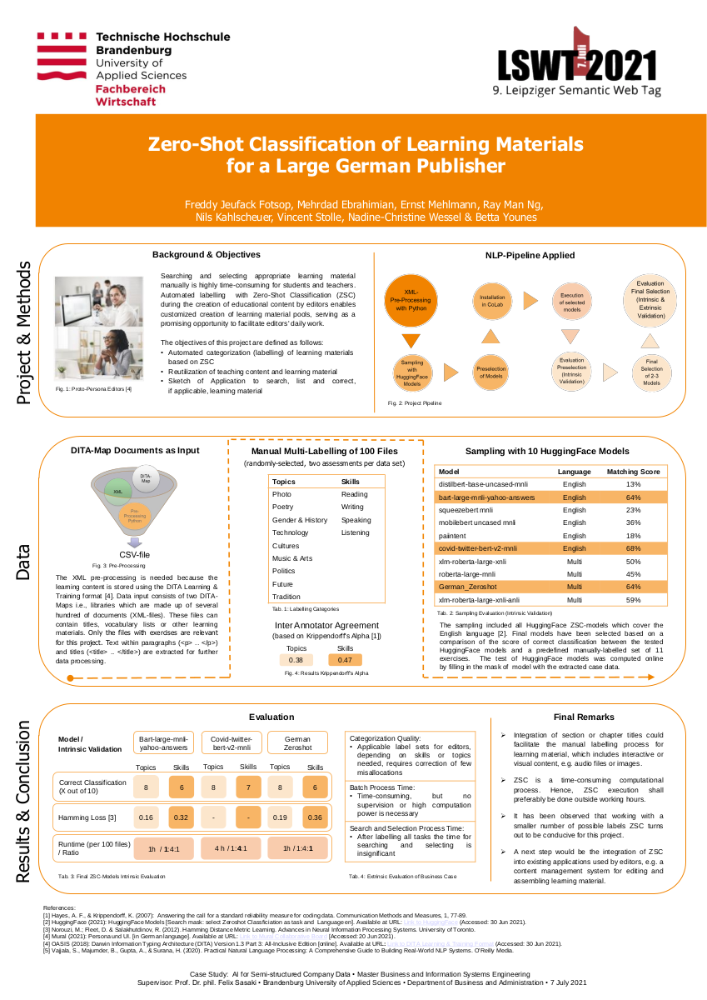

Felix Sasaki
Mittels verschiedener Zero-Shot Klassifikationsmodelle wurden semi-strukturierte Lernmaterialien eines großen deutschen Verlages kategorisiert. Im Poster wird dabei insbesondere auf den Anwendungsfall, die eingesetzte Pipeline und den Vergleich der Leistung verschiedener ZSC-Modelle eingegangen.
